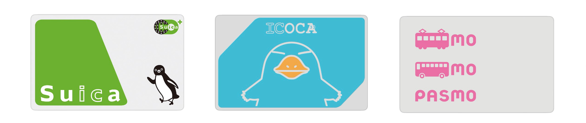
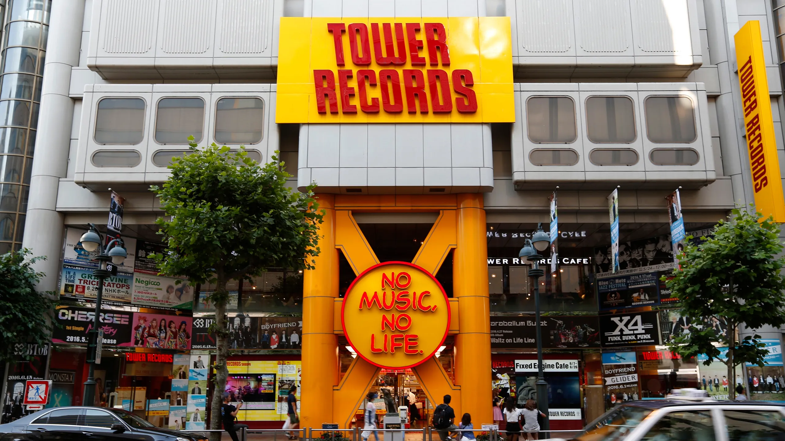

日本 - 建議/推薦購買
追星族必備物品與推薦店家
建議購買

IC 卡（Suica / ICOCA / PASMO）
日本大眾運輸必備，可在車站自動售票機購買和儲值。全國通用，使用方便，建議在抵達日本後立即購買。
價格：約 500-2,000 日圓（卡片本身含儲值）
推薦店家

タワーレコード（Tower Records）
日本最大的連鎖唱片行，專輯種類齊全，價格合理。新宿、渋谷、池袋等都有分店。
📍 東京都新宿區新宿 3-37-1
LOFT 渋谷店
日本人氣生活選物店，文具、雜貨、伴手禮選擇多，價格透明，適合一般旅客採買。
📍 東京都渋谷區宇田川町 21-1